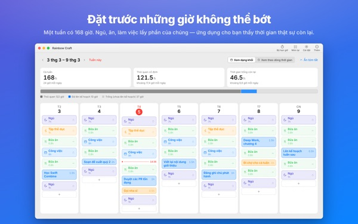
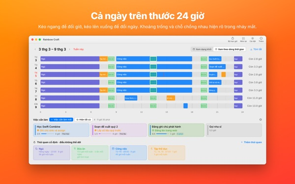
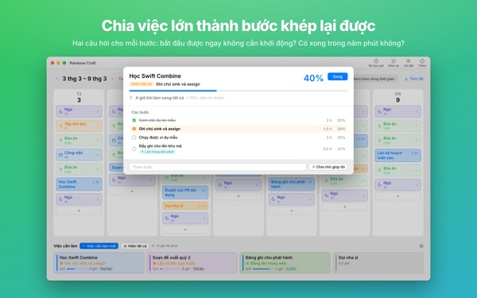
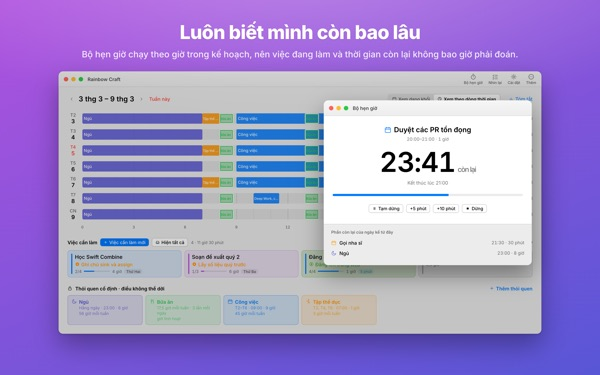
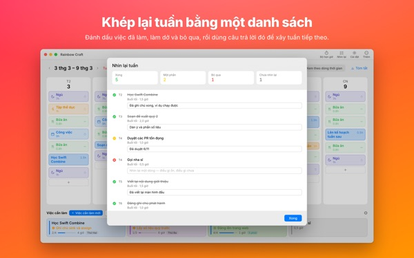

Tuần này có thật sự
chứa hết được không?
Rainbow Craft trải tuần của bạn trên Mac theo từng ngày, từng giờ. Bắt đầu từ khoảng thời gian không thể bỏ, như ngủ, ăn và làm việc, kéo việc cần làm vào các khoảng trống còn lại và xem việc nào thật sự vừa.
Lập kế hoạch, thói quen, việc cần làm, nhìn lại tuần, hẹn giờ và nhập lịch đều miễn phí.

Thử xếp một tuần ngay tại đây
Chúng tôi đã đặt sẵn bốn thói quen mà ứng dụng gợi ý khi mở lần đầu. Bật tắt từng thói quen rồi đặt việc vào các ngày.
Danh sách cứ dài ra, còn tuần thì không.
Một danh sách việc cần làm không cho bạn biết tuần này có gánh nổi nó không. Sau khi giấc ngủ, bữa ăn và đường đi đã lấy phần của chúng, thời gian còn lại ít hơn bạn nghĩ. Rainbow Craft cho bạn thấy số giờ đó bằng con số và ô vuông, và để bạn thử từng việc ở một chỗ thật.
Xem một ngày trên thước 24 giờ
Chế độ dòng thời gian trải một ngày lên thước 24 giờ. Khoảng trống và chỗ chồng lấn hiện ra ngay, và bạn chọn cách sắp xếp những việc chồng lên nhau.
Lấy cuộc họp và cuộc hẹn từ ứng dụng Lịch trên Mac mà không phải gõ lại. Nếu muốn, kế hoạch còn được ghi vào một lịch Rainbow Craft riêng mà bạn xem được trên iPhone. Các lịch khác không bao giờ bị thay đổi.

Chia việc lớn thành những bước làm xong được
Việc lớn hay bị kẹt khi vẫn còn thứ gì đó cản đường. Ứng dụng hỏi hai điều cho mỗi bước: có thể bắt đầu ngay không cần khởi động? Có xong trong năm phút không?
Bước nào đạt cả hai là một mảnh nhỏ để làm mỗi khi rảnh năm phút. Phần còn lại cần thời gian dành riêng. Ứng dụng đoán sai thì bạn quyết.

Đang làm gì, còn bao lâu
Đến giờ bắt đầu, kế hoạch chuyển sang đang làm, và khi hết giờ ứng dụng hỏi bạn đã xong chưa. Bộ hẹn giờ chạy theo thời gian biểu của bạn.
Widget Bộ hẹn giờ Hiện tại cho thấy việc đang làm và thời gian còn lại mà không cần mở ứng dụng.

Khép lại tuần bằng một danh sách đánh dấu
Nhìn lại tuần gồm mỗi ngày một thẻ. Đánh dấu việc đã xong, xong một nửa hay bỏ qua, rồi dùng nó để lên kế hoạch tuần sau.
Cùng một tài khoản iCloud, việc cần làm đi lại giữa ứng dụng này và Rainbow of Desire trên iPhone, nên kế hoạch hôm nay xếp trên Mac luôn theo bạn ra ngoài.

Bắt đầu chỉ với ba bước
- 1
Đặt những giờ cố định
Những gì lặp lại mỗi tuần như ngủ, ăn và làm việc thì đặt thành thói quen. Ứng dụng không tự điền gì thay bạn.
- 2
Ghi việc cần làm
Mỗi dòng một việc trong mục Việc cần làm ở dưới. Chưa cần quyết định khi nào làm.
- 3
Kéo vào các ngày
Thả vào một ngày là thành kế hoạch. Ngày bị lệch? Kéo sang ngày khác hoặc về lại danh sách.
Tính thử với các thói quen được gợi ý
- Một tuần
- 168 giờ
- Ngủ · 8 giờ mỗi ngày
- 56 giờ
- Bữa ăn · ba bữa mỗi ngày
- 17,5 giờ
- Công việc · học tập · 9 giờ ngày thường
- 45 giờ
- Tập thể dục · 1 giờ T2, T4, T6
- 3 giờ
- Thời gian bạn thật sự có trong tuần này
- 46,5 giờ
Đây chỉ là gợi ý. Hãy chọn và chỉnh thói quen cho hợp với cuộc sống của bạn. Ngày nghỉ phép hay đi công tác, chỉ cần bỏ phần công việc của riêng ngày đó.
Mọi thứ cần cho tuần này đều miễn phí
Miễn phí
- Kế hoạch tuần và ngày, thói quen và việc cần làm không giới hạn
- Dòng thời gian và chia bước
- Nhìn lại tuần, có thể sao chép thành văn bản
- Hẹn giờ và widget Bộ hẹn giờ Hiện tại
- Nhập từ lịch
- Đồng bộ với Rainbow of Desire trên iPhone
- Xu hướng 2 tuần gần nhất
Plus · Pro
- Plus: xu hướng 8 tuần, ngày và khung giờ bạn làm tốt nhất
- Plus: kế hoạch và thực tế
- Plus: áp nguyên kế hoạch của một tuần suôn sẻ vào tuần này
- Pro: mọi thứ của Plus và chia sẻ lịch bằng liên kết chỉ xem
- Pro: mua một lần, ứng dụng iPhone cũng mở Pro
Mỗi gói có thể đăng ký theo năm hoặc mua một lần dùng trọn đời
Xem giá trong ứng dụng và trên App Store. Gói năm tự động gia hạn trừ khi bạn hủy ít nhất 24 giờ trước khi hết kỳ. Pro mua trên iPhone cũng dùng được trên Mac cùng tài khoản iCloud.
Câu hỏi thường gặp
Có bắt buộc đăng nhập iCloud không?
Không, nếu bạn chỉ dùng trên Mac. Cần iCloud để đồng bộ với iPhone và chia sẻ lịch.
Ứng dụng có sửa lịch của tôi không?
Không bao giờ sửa các lịch sẵn có. Nhập lịch chỉ đọc những lịch bạn chọn. Nếu bật ghi kế hoạch vào lịch Rainbow Craft, ứng dụng tạo lịch riêng đó và chỉ ghi vào đó. Bạn có thể xóa nó bất cứ lúc nào trong ứng dụng Lịch.
Việc viết trên Mac không hiện trên iPhone.
Hãy kiểm tra hai thiết bị dùng cùng tài khoản iCloud và iPhone đã cài Rainbow of Desire. Đồng bộ đi qua iCloud nên có thể mất vài phút.
Đóng cửa sổ có thoát ứng dụng không?
Không. Ứng dụng vẫn chạy. Mở lại cửa sổ từ menu Cửa sổ hoặc bấm vào biểu tượng trên Dock.
Cập nhật xong thì việc và kế hoạch của tôi ra sao?
Vẫn y nguyên. Bản cập nhật không đổi hay xóa những gì bạn đã viết.
Đổi ngôn ngữ ứng dụng thế nào?
Chọn ở trên cùng phần Cài đặt, mục Language · 언어 · 語言, ứng dụng sẽ mở lại bằng ngôn ngữ đó. Có 23 ngôn ngữ. Tên thói quen và việc bạn tự viết sẽ không được dịch.
Đổi Mac mới thì mất Plus hoặc Pro.
Đăng nhập cùng Tài khoản Apple rồi bấm Khôi phục giao dịch mua trong Cài đặt. Muốn hủy, vào phần cài đặt tài khoản trên App Store.
Những gì tôi viết được lưu ở đâu?
Không tài khoản, không đăng ký, không có máy chủ của nhà phát triển giữ kế hoạch của bạn. Những gì bạn viết nằm trên thiết bị và trong iCloud của chính bạn. Ứng dụng gửi thống kê sử dụng ẩn danh không chứa nội dung bạn viết, và bạn có thể tắt trong Cài đặt ở mục Gửi thống kê sử dụng ẩn danh.
Bị vướng hay thấy điều gì lạ? Hãy viết cho chúng tôi qua mizzking75@gmail.com. Trong phần cài đặt của ứng dụng cũng có mục liên hệ.